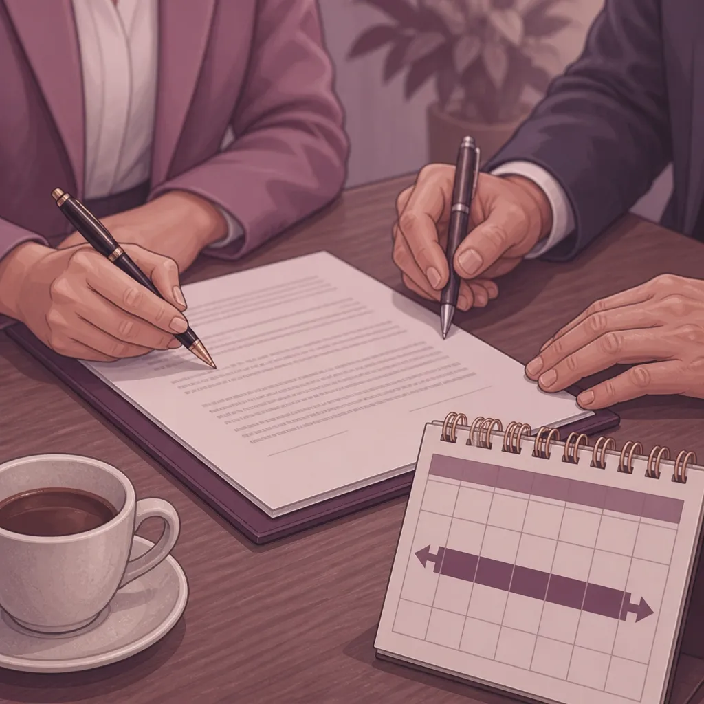
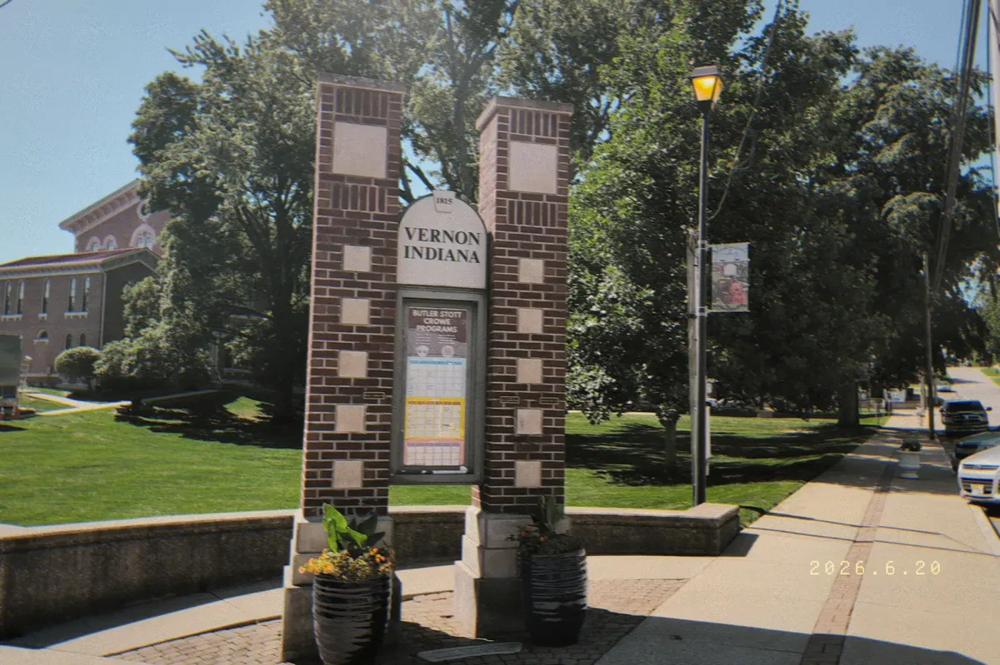

Can I Get a Divorce Without Going to Court in Indiana? What Jennings County Couples Should Know
When people think about divorce, they often think about a big fight in a courtroom. They imagine a judge in a black robe and lawyers arguing in front of a crowd. This sounds scary and expensive. But for many couples in Jennings County, it doesn't have to be that way.
The short answer is yes. You can get a divorce in Indiana without ever stepping foot in a courtroom. This is often called an "uncontested divorce" or a "summary dissolution." It is a way for people who agree on everything to move on with their lives in a peaceful way.
If you live in North Vernon, Vernon, or anywhere else in our local area, here is what you need to know about getting a divorce without going to court.
What is an Uncontested Divorce?
An uncontested divorce is when both spouses agree on every single part of their split. This means you have already talked about who gets the house, who pays which debts, and how you will handle things with your children.
In Indiana, if you agree on everything, the law lets you skip the final hearing. Instead of a judge listening to you speak in court, the judge just reads your papers. If the papers are correct and follow the law, the judge signs them. This makes your divorce official.
This process is much faster and less stressful. It helps you keep your private business out of a public courtroom. It also helps you save money on legal fees. At Chris Doran Law LLC, I focus on listening to what you have to say and giving you practical options to make this process as smooth as possible.
The Big Rules for a No-Court Divorce
To get a divorce without a hearing, you have to follow a few important rules. If you miss one, the court might make you come in for a hearing anyway.
1. You Must Agree on Everything. This is the most important part. You cannot have any fights left to settle. You must agree on:
How to split up your cars, furniture, and bank accounts.
Who will stay in the family home or if you will sell it.
Who is responsible for credit cards or medical bills.
If one person will pay money to help the other (spousal support).
Everything regarding your children (if you have them).
2. The 60-Day Waiting Period. Even if you agree on everything on day one, Indiana has a rule called the "60-day clock." You must wait at least 60 days after you file your papers before the judge can sign the final decree. This rule cannot be skipped. It is a "cooling off" period the state requires for everyone.
3. Residency Rules. To file for divorce in Jennings County, at least one spouse must have lived in Indiana for the last six months. Also, one of you must have lived in Jennings County for the last three months. This applies to people in Commiskey, Scipio, Hayden, and all surrounding areas.
The Paperwork You Need to File
Since you aren't going to court to talk, your paperwork has to do all the talking for you. This is where things can get tricky. Even when a split is friendly, the court has very specific forms that must be filled out perfectly.
The Marital Settlement Agreement. This is the most important document. It is a contract between you and your spouse. It lists every decision you have made. It must be clear and fair. Once the judge signs it, this agreement becomes a court order. If it is written poorly, it can cause big problems years later.
The Verified Waiver of Final Hearing. This is a special paper where you both tell the judge, "We agree on everything, and we don't want a hearing." By signing this, you give up your right to speak in front of the judge. If both of you sign this and your settlement agreement, the judge can usually finish the case in their office.
Other Local Forms. Jennings County might have extra forms like a "Financial Declaration." This is a list of what you own and what you owe. Even if you are happy with how you are splitting things, the court needs to see the numbers to make sure everything is legal.

What About the Kids?
If you have children under 18, the court is very careful. Even if you and your spouse agree on custody and visits, the judge must make sure the plan is best for the kids.
In Jennings County, judges often want to see:
A clear "Parenting Time" schedule.
A "Child Support Worksheet" that follows Indiana's math rules.
Proof that you have taken a parenting class (this is common in many Indiana counties).
Sometimes, if kids are involved, a judge might ask you to come in for a very short 5-minute hearing just to make sure the kids are taken care of. However, if your paperwork is done right, many judges will still allow the no-court option.
Why Use a Small Town Lawyer for an Agreeable Divorce?
You might think, "If we agree on everything, why do we need a lawyer?" That is a great question. As a small town lawyer in North Vernon, I wear many hats. I don't just fight in court; I help people solve problems before they become fights.
Here is how I can help you even if you don't want to go to court:
I listen to your concerns. I want to hear what you need so I can write an agreement that actually works for your life.
I check the math. Child support math can be confusing. If the math is wrong, the judge will reject your papers and you will have to start over.
I handle the filing. I know the Jennings County court system well. I make sure your papers get to the right person at the right time.
Mediation. If you agree on 90% of things but are stuck on one small part, I can act as a neutral person to help you find a solution. This keeps you out of a contested trial.
Fixing mistakes. Many people try to use forms they find online. These forms are often not right for Indiana law or for specific local requirements in different courts. Fixing a mistake later is much more expensive than doing it right the first time.

Serving Our Neighbors in Jennings County and Beyond
My office is right here in Jennings County. I love serving my neighbors in North Vernon, Vernon, Butlerville, and Scipio. I know these communities because I live and work here too.
I also know that sometimes people in nearby towns like Columbus, Seymour, and Versailles need a lawyer who will truly listen. I am happy to travel to these areas to help. I believe in being honest and upfront about everything. If I have to travel outside of Jennings County, I will tell you exactly what the travel fees will be so there are no surprises.
Take the Next Step
Divorce is the end of a chapter, but it doesn't have to be a nightmare. If you and your spouse are ready to move forward and want to do it without the stress of a courtroom battle, I am here to help.
I provide personalized legal services for all types of family law and divorce matters. I will take the time to explain your options clearly without using big legal words that nobody understands.
Let's talk about how we can get your divorce finalized quickly and quietly. You can focus on your future while I handle the paperwork.
Ready to get started? Contact Chris Doran Law LLC today to schedule a time to talk.